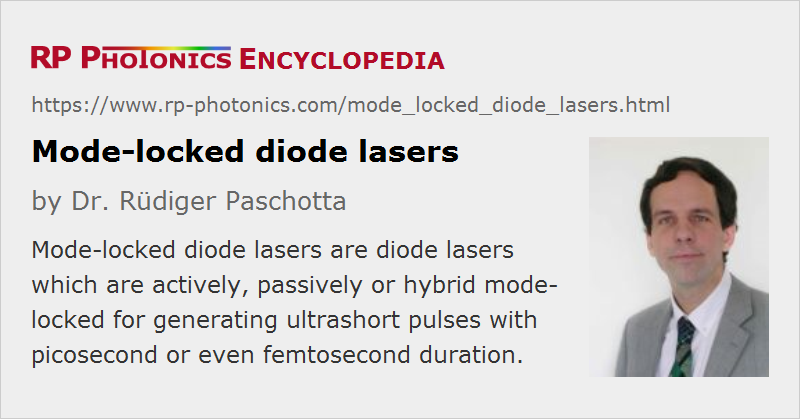

Mode-locked Diode Lasers
Definition: diode lasers which are actively, passively or hybrid mode-locked for generating ultrashort pulses
More general terms: mode-locked lasers, diode lasers
German: modengekoppelte Diodenlaser
Categories: lasers, lightwave communications, light pulses
How to cite the article; suggest additional literature
Author: Dr. Rüdiger Paschotta
Diode lasers can be used for generating ultrashort pulses – either with various techniques of mode locking, as discussed in this article, or with gain switching. Typically, pulses with durations between 0.5 and 5 ps and pulse repetition rates between 1 GHz and hundreds of gigahertz are generated with mode locking. In extreme cases, the repetition rate can even be above 1 THz [9]. The main application of ultrafast diode lasers is in optical fiber communications systems, where such lasers function as pulse sources of fast data transmitters or for all-optical signal processing.
Techniques for Mode Locking of Diode Lasers
The following techniques can be used for mode locking of diode lasers:
Active Mode Locking
Active mode locking can be accomplished with an optical modulator in the laser resonator. This is usually either an electroabsorption modulator in the form of an unpumped region with some modulated voltage, or an amplifying section where the drive current is modulated.
Passive Mode Locking
Passive mode locking relies on a saturable absorber in the resonator. This can simply be an unpumped section of the device. It is common to apply an electrical bias for adjusting the absorber properties. However, the recovery time of that kind of absorber is fairly long. Shorter recovery times are achieved e.g. by implanting nitrogen (N+ or N2+) ions from one facet. This introduces crystal defects, where carriers can recombine.
The absorber is often placed at a resonator end, but it can also be placed somewhere within the resonator so that different pulses can meet in the absorber (colliding pulse mode locking).
Hybrid Mode Locking
Hybrid mode locking (Figure 1) is a combination of active and passive mode locking. With this approach it is possible to control the pulse timing externally, as in an actively mode-locked laser, while also achieving a shorter pulse duration as in a passively mode-locked device.
In most cases, a multisegment semiconductor structure is required, containing not only a gain section, but also an absorber or modulator section, and possibly additional means for e.g., repetition rate control.
Monolithic versus External-cavity Lasers
For pulse repetition rates roughly below 10 GHz, an external cavity setup is usually required, as a monolithic device would become too long. The laser resonator usually has the semiconductor chip on one end and is completed with bulk-optical elements, at least a collimation lens (e.g. a GRIN lens) and an end mirror.
Another technical approach is to incorporate the semiconductor chip into a ring laser resonator made of optical single-mode fiber. In the latter case, the resonator is typically much longer, and allows the use of fiber-optic components. The semiconductor device may then be a fiber-coupled semiconductor optical amplifier (SOA).
External-cavity lasers have various advantages:
- The pulse repetition rate can be chosen in a wide range, and can easily be tuned e.g. by moving the end mirror, or with a fiber resonator by stretching a piece of fiber with a piezo transducer.
- It is possible to insert an optical filter for fixing the emission wavelength, or use a diffraction grating as the end mirror (Littrow configuration; see the article on external-cavity diode lasers).
- Even for higher pulse repetition rates, where harmonic mode locking is required, external-cavity devices can be advantageous, because they have a potential for lower laser noise, e.g. in the form of timing jitter.
Therefore, mode-locked external-cavity diode lasers sometimes compete with mode-locked fiber lasers in areas where monolithic laser diodes would not be suitable. On the other hand, a monolithic setup with fundamental mode locking can be very compact, much cheaper to manufacture, and can exhibit very robust pulse emission.
Limitations
Although mode-locked diode lasers can be very compact and robust devices, which fit particularly well into optical fiber communications systems, they are subject to various limitations, which do not allow them to reach the full performance potential of, e.g., mode-locked fiber lasers:
- The pulse energy is fairly limited – often far below 1 pJ. Average output powers are often below 1 mW. Due to the short upper-state lifetime, ultrafast semiconductor lasers are generally not suitable for lower repetition rates of e.g. well below 1 GHz, except with synchronous pumping.
- Although the gain bandwidth of semiconductors would be compatible with pulse durations of a few tens of femtoseconds, the pulse durations achieved are usually much longer – at least hundreds of femtoseconds, and often picoseconds. The pulse formation dynamics are relatively complicated, e.g. due to nonlinear phase changes associated with gain saturation, and difficult to optimize.
- The pulse quality is normally not as good as e.g. for mode-locked fiber lasers. In particular, there are often additional satellite pulses, caused e.g. by imperfections of the anti-reflection coating. Also, the pulses are often chirped, i.e., they are not bandwidth-limited.
- The timing jitter and the noise of other pulse parameters are higher than for other mode-locked lasers. This is partly a consequence of the low power level.
Other Mode-locked Semiconductor Lasers
Diode lasers are not the only semiconductor lasers which can be mode-locked. There are also vertical external-cavity surface-emitting lasers, which can be optically pumped. This approach has a potential for much higher pulse energies and average output powers up to several watts, and has also been demonstrated to work in a wide range of pulse repetition rates from a few gigahertz to tens of gigahertz. Such lasers can in some areas, particularly for high pulse repetition rates, even rival mode-locked doped-insulator bulk lasers.
Suppliers
The RP Photonics Buyer's Guide contains 2 suppliers for mode-locked diode lasers.
Questions and Comments from Users
Here you can submit questions and comments. As far as they get accepted by the author, they will appear above this paragraph together with the author’s answer. The author will decide on acceptance based on certain criteria. Essentially, the issue must be of sufficiently broad interest.
Please do not enter personal data here; we would otherwise delete it soon. (See also our privacy declaration.) If you wish to receive personal feedback or consultancy from the author, please contact him e.g. via e-mail.
By submitting the information, you give your consent to the potential publication of your inputs on our website according to our rules. (If you later retract your consent, we will delete those inputs.) As your inputs are first reviewed by the author, they may be published with some delay.
Bibliography
| [1] | P. T. Ho et al., “Picosecond pulse generation with a cw GaAlAs laser diode”, Appl. Phys. Lett. 33 (3), 241 (1978), doi:10.1063/1.90312 |
| [2] | J. E. Bowers et al., “Actively mode-locked semiconductor lasers”, IEEE J. Quantum Electron. 25 (6), 1426 (1989), doi:10.1109/3.29278 |
| [3] | Y. K. Chen and M. C. Wu, “Monolithic colliding-pulse mode-locked quantum-well lasers”, IEEE J. Quantum Electron. 28 (10), 2176 (1992), doi:10.1109/3.159526 |
| [4] | P. J. Delfyett et al., “High-power ultrafast laser diodes”, IEEE J. Quantum Electron. 28 (10), 2203 (1992), doi:10.1109/3.159528 |
| [5] | P. P. Vasil'ev, “Ultrashort pulse generation in diode lasers”, Opt. Quantum Electron. 24, 801 (1992), doi:10.1007/BF00620194 |
| [6] | D. J. Derickson et al., “Short pulse generation using multisegment mode-locked semiconductor lasers”, IEEE J. Quantum Electron. 28 (10), 2186 (1992), doi:10.1109/3.159527 |
| [7] | R. Ludwig and A. Ehrhardt, “Turn-key-ready wavelength-, repetition rate- and pulsewidth-tunable femtosecond hybrid modelocked semiconductor laser”, Electron. Lett. 31 (14), 1165 (1995), doi:10.1049/el:19950796 |
| [8] | K. Sato et al., “Actively mode-locked strained-InGaAsP multiquantum-well lasers integrated with electroabsorption modulators and distributed Bragg reflectors”, J. Sel. Top. Quantum Electron. 2 (3), 557 (1996), doi:10.1109/2944.571755 |
| [9] | S. Arahira et al., “Mode-locking at very high repetition rates more than terahertz in passively mode-locked distributed-Bragg-reflector laser diodes”, J. Sel. Top. Quantum Electron. 32 (7), 1211 (1996), doi:10.1109/3.517021 |
| [10] | K. Sato et al., “Frequency range extension of actively mode-locked lasers integrated with electroabsorption modulators using chirped gratings”, J. Sel. Top. Quantum Electron. 3 (2), 250 (1997), doi:10.1109/2944.605665 |
| [11] | H. Yokoyama, “Highly stabilized mode-locked semiconductor diode lasers”, Rev. Laser Eng. 27, 750 (1999), doi:10.2184/lsj.27.750 |
| [12] | E. Hashimoto et al., “High-frequency synchronized signal generation using semiconductor lasers”, IEEE Trans. Microwave Theory Technol. 47 (7), 1206 (1999), doi:10.1109/22.775459 |
| [13] | I. Ogura et al., “Precise operation-frequency control of monolithic mode-locked laser diodes for high-speed optical communication and all-optical signal processing”, Opt. Quantum Electron. 33, 709 (2001), doi:10.1023/A:1017511214111 |
| [14] | L. A. Jiang et al., “Quantum-limited noise performance of a mode-locked laser diode”, Opt. Lett. 27 (1), 49 (2002), doi:10.1364/OL.27.000049 |
| [15] | K. Sato, “Semiconductor light sources for 40-Gb/s transmission systems”, J. Lightwave Technol. 20 (12), 2035 (2002) |
| [16] | C. M. DePriest et al., “Ultralow noise and supermode suppression in an actively mode-locked external-cavity semiconductor diode ring laser”, Opt. Lett. 27 (9), 719 (2002), doi:10.1364/OL.27.000719 |
| [17] | L. A. Jiang et al., “Semiconductor mode-locked lasers as pulse sources for high bit rate data transmission”, J. Opt. Fiber Commun. Rep. 2, 1 (2005), doi:10.1007/s10297-004-0022-0 |
| [18] | J. J. Plant et al., “250 mW, 1.5 μm monolithic passively mode-locked slab-coupled optical waveguide laser”, Opt. Lett. 31 (2), 223 (2006), doi:10.1364/OL.31.000223 |
| [19] | M. G. Thompson et al., “InGaAs quantum-dot mode-locked laser diodes”, J. Sel. Top. Quantum Electron. 15 (3), 661 (2009), doi:10.1109/JSTQE.2008.2012265 |
| [20] | L. Hou et al., “Mode locking at terahertz frequencies using a distributed Bragg reflector laser with a sampled grating”, Opt. Lett. 38 (7), 1113 (2013), doi:10.1364/OL.38.001113 |
See also: diode lasers, laser diodes, mode-locked lasers, mode locking, vertical external-cavity surface-emitting lasers
and other articles in the categories lasers, lightwave communications, light pulses
|  |
If you like this page, please share the link with your friends and colleagues, e.g. via social media:
These sharing buttons are implemented in a privacy-friendly way!